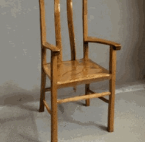

|
Email: cchawla [at] cs [dot] cmu [dot] edu
Hi! I'm a Graduate Student Researcher at the Robotics Institute at Carnegie Mellon University, where I am fortunate to be advised by Prof. Guanya Shi. I have also worked with Prof. Jean Oh as a visiting researcher. Previously, I graduated from the Technical University of Munich, as a 4-time reciepient of the German National Scholarship.
My research interests focus on learning-based robotic manipulation. Primarily, I am interested in exploring methods to incorporate human priors by learning skill representations across humans and robots. When I'm not in the lab, I am either playing badminton üè∏ or travelling. CV / Google Scholar / Github / LinkedIn |

|
Research |

|
Jialong Li, Tairan He, Ge Yan, David J. Yoon, Ryan Hoque, Jian Zhang, Sha Yi, Guanya Shi, Xiaolong Wang Egocentric human demonstrations as a data source for humanoid manipulation. |

|
IROS 2024 We developed an unsupervised approach to learn temporal abstractions of skills incorporating agent-environment interactions. We hope to learn representations of patterns of motion of objects in the environment, or patterns of change of state. Our approach is able to learn semantically meaningful skill segments across robot and human demonstrations, despite being completely unsupervised. |

|
We developed an algorithmic framework to extract different intrinsic features from human demonstrations. We are studying various features, including interactions with objects along the trajectory, analyzing the environment for interactions with the background (e.g., wiping or writing), and classifying the type of motion within a trajectory segment (e.g., shaking, rotating, or transporting). |

|
We presented a method to learn human motions using a Learning-From-Demonstration approach. Using Dynamic Motion Primitives, we were able to teleoperate a Franka Panda Arm using the learned trajectories. |
Projects
|  |
Comparing different methods including Autoencoders and PCA, for feature representation in face reconstruction
|

|
We proposed a pipeline to benchmark pre-training methods using different state representations.
Our method consisted of extracting sensorimotor information from videos by lifting the human hand and the manipulated object in a
shared 3D space in simulation (IsaacGym), i.e. either 3D point-tracks or 3D meshes.
Then, we retarget hand-trajectories to a Franka with a Shadow hand.
Finally, we fine-tune on various tasks.
|

|
Comparing different methods including Autoencoders and PCA, for feature representation in face reconstruction
|

|
Distributing candies during Halloween at the Robotics Institute, Carnegie Mellon University
|
Work Experience
Roboverse Reply | July 2023 - April 2024
- Developed a perception pipeline for detecting and reporting measurements from analog gauges. Set up data-annotation, post-processing, and real-time inference of gauge measurements. Dockerized the application to integrate with Boston Dynamics' Spot to autonomously collect data in a factory environment.
- Created a webRTC pipeline using gRPC to transfer point cloud data from Spot's LIDAR sensor to Oculus VR Headset, enabling a remote user to observe Spot's immediate environment in real time.
- Migrated the company's robotic framework from ROS to ROS2.
Achievements
Academic Service
|
Last updated: Jan 2023 |